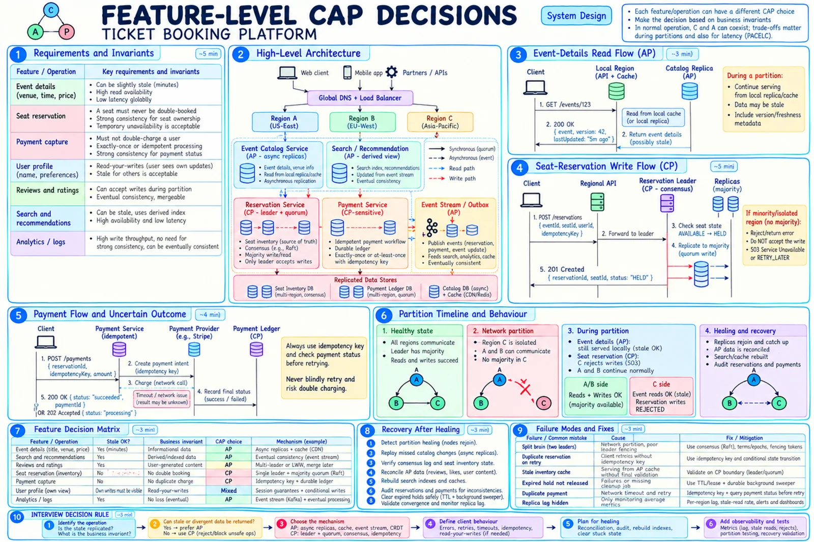

Topic · CAP Theorem in Depth
CAP Walkthrough: Ticket Booking
One product, mixed guarantees: AP catalog and search, CP seat ownership, idempotent payment saga - and what each does during a partition.


Quick Revision
- Event details, search, reviews, analytics → AP with bounded staleness.
- Seat ownership → CP: one ordered
AVAILABLE → HELD → CONFIRMEDtransition; minority returns 503. - Payment → durable intent + idempotency + status lookup + compensation, never blind retry.
- A timeout is an unknown outcome, not a failure.
- After healing: catch up, reconcile, resolve UNKNOWN payments, audit invariants.
Requirements → decisions
| Ask | Answer | Decision |
|---|---|---|
| Never conflict? | No double seat owners | CP, one ordered authority |
| Event details stale? | Minutes OK | Local cache/replica, AP |
| Both regions reserve during partition? | No | Only quorum side; minority rejects |
| Unavailable vs double booking? | Unavailable | Retryable 503 |
| See own profile/cart update? | Yes | Session / min-version token |
| Review conflicts mergeable? | Yes | Accept locally, merge later |
| Payments reconcilable later? | Not safely | Durable ledger + idempotency + audit |
| No majority reachable? | Reservations stop, browsing continues | Degrade by feature |
| Client after timeout? | Retry same key / query status | Dedupe records + status APIs |
| Latency? | Catalog p99 < 100 ms; reserve < 500 ms | Local AP reads; quorum over selected regions |
per endpoint: authoritative state · invariant · allowed staleness · partition response · consistency model · retry/unknown semantics · healing · metrics + fault test
Architecture and data
Clients → Global DNS/LB → Regions A/B/C → regional API/BFF
→ Event Catalog → async replicas + cache (AP)
→ Search/Recs → derived index (AP)
→ Reservation → consensus group, seat inventory (CP)
→ Payment → durable ledger + provider (CP-sensitive)
→ Outbox/stream → analytics, email, invalidation (AP)
SeatInventory(event_id, seat_id PK, state, reservation_id, held_by_user_id,
lease_expires_at, version)
Reservation(reservation_id, event_id, seat_id, user_id, status, idempotency_key UNIQUE, version, expires_at)
PaymentIntent(payment_id, reservation_id, idempotency_key UNIQUE, provider_reference,
state CREATED|PROCESSING|SUCCEEDED|FAILED|UNKNOWN, amount, version)
Flows
- Event details (AP) - nearest region → cache/local replica → return with
version/lastUpdatedAt. In a partition keep serving; replay invalidations later. Never use browse state as seat proof. - Reserve seat (CP) - route to reservation leader → validate state and hold expiry → append
AVAILABLE → HELDto consensus log → majority commit → return version → outbox event. - Hold expiry -
lease_expires_atin authoritative state; delay queue only as optimization; sweeper repairs missed timers; fence by version. - Payment saga - durable intent →
PAYMENT_PENDING→ provider with idempotency key → persist result →CONFIRMED→ outbox. On timeout: mark UNKNOWN, query provider, never charge with a new key, refund if confirmation fails.
UPDATE seat_inventory SET state='HELD', reservation_id=:r, held_by_user_id=:u,
lease_expires_at=:exp, version=version+1
WHERE event_id=:e AND seat_id=:s AND state='AVAILABLE' AND version=:v;
POST /v1/reservations Idempotency-Key: ...
201 Created · 409 Conflict (taken) · 503 Retry-Later (no quorum) · 202 Processing (query status)
Partition-time behavior
| Feature | Majority side | Isolated side | Client sees |
|---|---|---|---|
| Event details | Serve local | Serve local | 200, maybe stale |
| Search | Last index | Last index | 200, fresher later |
| Reviews | Accept | Accept | 201/202, merge later |
| Seat reservation | Commit with quorum | Reject/redirect | 201 or 503 |
| Seat map browse | Possibly stale | Possibly stale | Marked non-final |
| Payment status | Authoritative ledger | Known state or unknown | No false success/failure |
| Payment capture | Authoritative workflow | Reject or queue safely | Idempotent retry/status |
| Analytics | Buffer | Buffer | Eventual |
Healing, observability, testing
- Heal - re-form consensus, verify seat/reservation logs, replay catalog CDC, reconcile AP data, resolve UNKNOWN payments, rebuild indexes/caches, audit invariants, compare regions, clear partition-mode only when repair metrics are normal.
- Metrics - leader changes, election time, quorum failures, rejected-for-quorum requests, fencing rejections, replica lag, stale-read age, session failures, sibling counts, hinted-handoff and repair backlog, unknown-outcome rate, dedupe hits, double-booking count (must stay 0), time in partition mode.
- Tests - cut inter-region links, asymmetric partitions, delays past timeouts, leader pause, stale-leader writes, majority loss, dual-side AP writes, lost responses + retries, heal and converge, Jepsen-style history checks. Process kills alone aren't enough.
-- no seat with two confirmed owners SELECT event_id, seat_id, COUNT(*) FROM reservations WHERE status='CONFIRMED' GROUP BY event_id, seat_id HAVING COUNT(*) > 1;
Failure modes
- Timeout causes duplicate charge - idempotency key + status lookup.
- Retry storm after quorum loss - Retry-After, backoff + jitter, circuit breakers, shedding.
- Stale cache bypasses CP DB - revalidate at the transactional boundary.
- API hangs without majority - deadlines, clear retryable errors, partition-mode routing.
- Catalog and inventory share one policy - split domains and contracts.
- Payment marked failed after timeout - persist UNKNOWN; query by key/reference.
- Duplicate outbox side effects - stable event IDs, idempotent consumers.
- Missing outbox event - transactional outbox/CDC + replay.
- Unclear client contract - distinguish rejection from unknown; status endpoint.
- Only process kills tested - inject link loss, latency, regional isolation.
Interview practice
Answer aloud, then reveal.
Agoda Senior SE: flight booking - CAP, concurrent seats, failures, testing.
Search/schedules AP; seat reservation CP via leader/quorum; payment intent + idempotency + status + saga. Minority rejects - no double booking. Test concurrency, lost responses, stale leader, majority loss, healing.
Nike SDE 3: online store with both consistency and availability paths.
AP: catalog, media, recs, search, reviews, analytics. CP: coupon redemption, final stock, order state, ledger. Checkout revalidates; idempotency, outbox, explicit partition responses, recovery audits.
Target Backend L4 (Sep 2025): CAP in e-commerce/promotions.
Browse and recommendations AP; coupon limits CP or escrow; inventory confirmation CP; order/payment CP-sensitive; analytics AP.
What should a client do after a write timeout?
Treat it as unknown: retry with the same idempotency key, query status, or conditional read - never a new non-idempotent request.
When is a single write region a good design?
Writes rarer than reads, strong invariant, simplicity matters: regional reads from replicas, mutations to home region, fenced failover.
What can you cache in a CP booking system?
Event metadata and browse seat maps - never final ownership; revalidate at the CP store.
Is payment simply "CP"?
It's consistency-sensitive but spans an external provider: durable ledger/intents, idempotency, reconciliation, compensation.
How do you test a CAP claim?
Define the history property, inject real network faults, record invocation/response and versions, check with a history checker; test retries, stale leaders, healing.